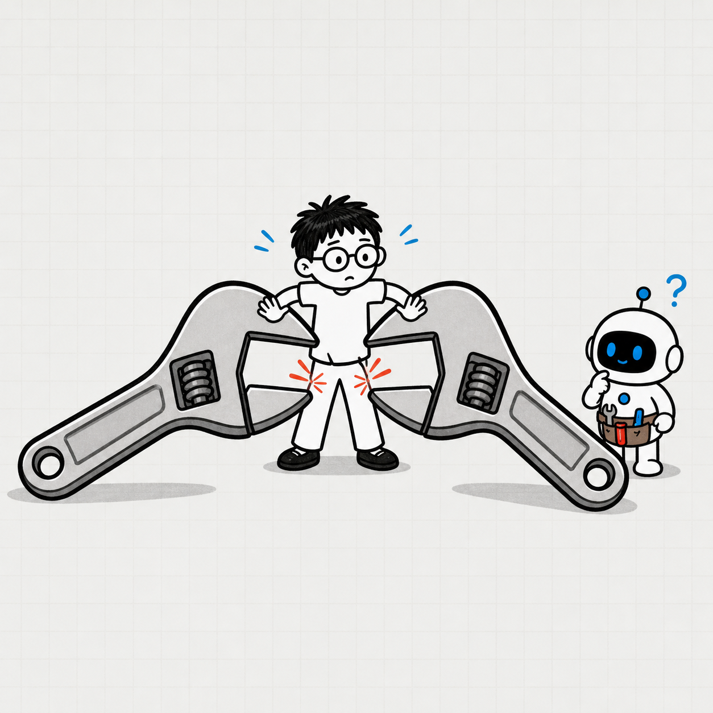
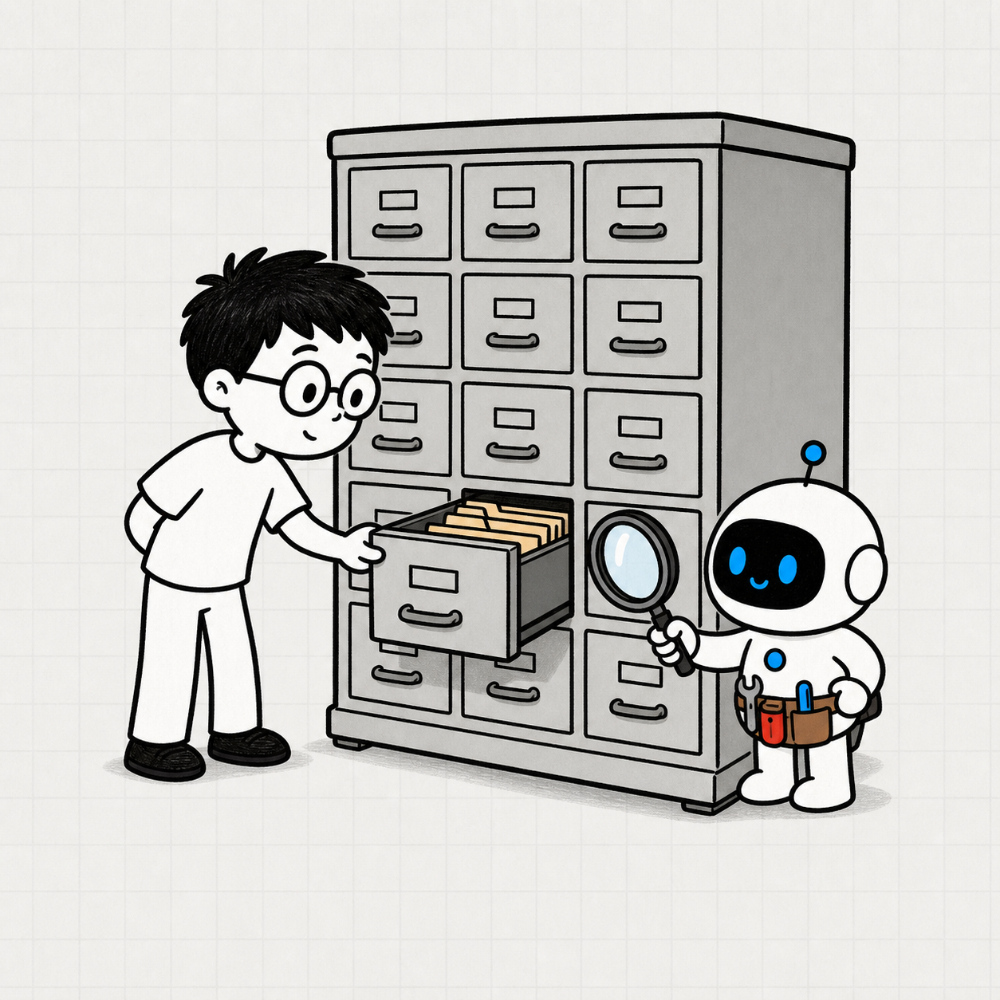
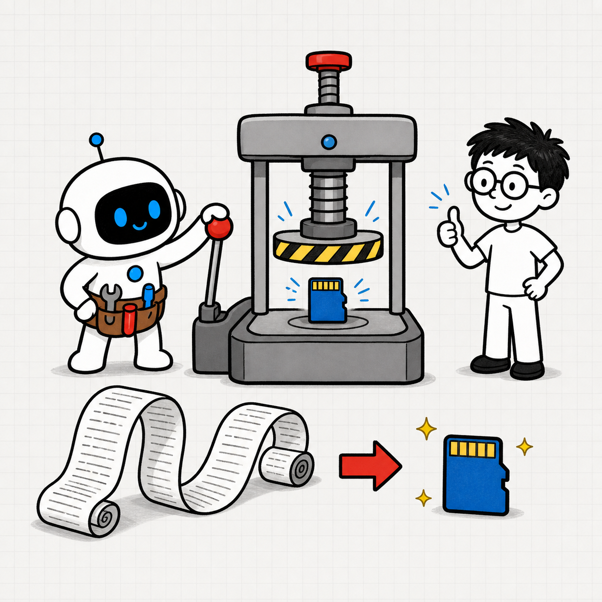
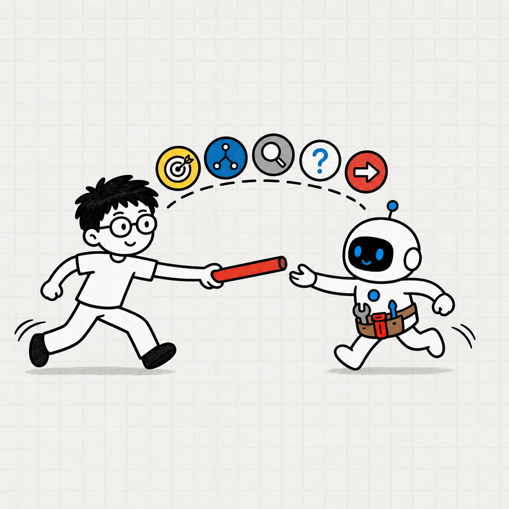
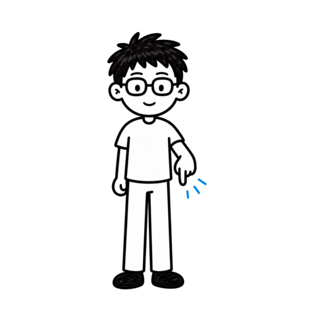

你知道怎么给 AI 智能体高信号上下文吗？
高信号？


Anthropic 如何解决 AI 智能体上下文问题

ANTHROPIC 方法 成为更擅长使用 AI 的人关注 + 收藏
成为更擅长使用 AI 的人关注 + 收藏
成为更擅长使用 AI 的人关注 + 收藏
AI 智能体上下文是有限的注意力预算
注意力预算有限


给 AI 智能体一个六部分高信号包

≠

目标 · 规则 · 工具 · 示例 · 检索 · 状态
AI 智能体看到更多，不等于信号更强

当前信号 68%
AI 智能体需要最小充分上下文
支持下一步行动
第 2 章
注意力预算
判断什么信息值得进入当前窗口

AI 智能体看见的是完整上下文


指令 · 工具 · 示例 · 历史 · 请求
规则写进去了，也可能被噪声淹没
材料越多，找回重点越难
只保留会改变下一步判断的信息
目标 · 约束 · 证据 · 状态

必要信息进入窗口，完整日志只留路径


规则 + 当前错误
最小充分，不等于越短越好

≠

验收 · 风险 · 必要证据
上下文必须持续刷新

新证据进入 · 旧轨迹退出
1.把上下文当作注意力预算
2.更多 token 不等于信号更强
3.随任务持续刷新上下文
1.把上下文当作注意力预算
2.更多 token 不等于信号更强
3.随任务持续刷新上下文
1.把上下文当作注意力预算
2.更多 token 不等于信号更强
3.随任务持续刷新上下文
第 3 章
高信号输入
指令 · 工具 · 示例

指令要落在合适的抽象层级

目标 · 边界 · 判断原则
工具是 AI 智能体与环境的契约

名称 · 参数 · 错误 · 返回

工具边界不清，AI 智能体就会犹豫

减少功能重叠
少量典型示例胜过边缘堆积

≠
主要模式 + 关键边界
每段高信号都必须承担工作

结果 · 约束 · 工具 · 证据
高信号没有固定字数
信息必须承担明确工作

1.指令清楚，但不要僵化
2.保留最小工具集
3.用典型示例展示模式
1.指令清楚，但不要僵化
2.保留最小工具集
3.用典型示例展示模式
1.指令清楚，但不要僵化
2.保留最小工具集
3.用典型示例展示模式
第 4 章
按需检索
需要时再打开细节

别在开始前塞入全部文档

预算提前被花掉
上下文里先保留一张地图

≠
路径 · 查询 · 链接 · 标识
先搜索，再读取目标片段

不要一次打开整个目录
让 AI 智能体逐层建立理解

渐进式披露
稳定规则预载，细节按需打开
混合策略
按需检索需要停止条件


命名 · 搜索工具 · 停止规则
1.保留轻量引用
2.相关时再打开细节
3.平衡聚焦与检索成本
1.保留轻量引用
2.相关时再打开细节
3.平衡聚焦与检索成本
1.保留轻量引用
2.相关时再打开细节
3.平衡聚焦与检索成本
第 5 章
长任务记忆
压缩 · 笔记 ·专门 Agent

用压缩摘要开启新窗口

决定 · 约束 · 证据 · 下一步
压缩先保证不漏关键信息
宁可多带，不丢约束
把工作状态写到窗口之外


结构化外部笔记
交接摘要必须保留五类信息

目标 · 决定 · 证据 · 未知 · 下一步
专门 Agent 只用于值得并行深挖的问题

价值必须超过协调成本

根据任务形态选择记忆方法
≠
压缩 · 笔记 · 专门 Agent
1.压缩长轨迹
2.写入结构化笔记
3.专门 Agent 只用于深挖
1.压缩长轨迹
2.写入结构化笔记
3.专门 Agent 只用于深挖
1.压缩长轨迹
2.写入结构化笔记
3.专门 Agent 只用于深挖
第 6 章
上下文包
完成六部分可复用工具
第一组：结果目标和运行规则

交付 · 验收 · 权限 · 风险 · 停止
第二组：工具地图和典型示例
≠
使用条件 · 主要模式
第三组：检索索引和工作状态
证据入口 · 决定 · 未知 · 下一步
每个字段都要服务下一步动作
下一步该做什么？

到达里程碑就更新状态

更新状态 · 归档旧轨迹
上下文包必须可快速检查

足够短 · 足够完整
1.用目标和规则锚定智能体
2.用工具、示例和索引指导行动
3.用工作状态保持连续性
1.用目标和规则锚定智能体
2.用工具、示例和索引指导行动
3.用工作状态保持连续性
1.用目标和规则锚定智能体
2.用工具、示例和索引指导行动
3.用工作状态保持连续性
AI 智能体忘记重点，可能因为信息太多
有限注意力被噪声争夺
第一，管理完整上下文状态
目标 · 约束 · 工具 · 证据 · 状态
第二，提高输入的信号质量
清楚指令 · 最小工具 · 典型示例
第三，按需检索细节
≠

稳定信息在前，专业材料按需打开
用六部分上下文包保护长期任务
保留信号 · 按需检索 · 更新状态

长期任务开始前，先写好六部分
先整理，再行动
接下来我来告诉你，Anthropic 是怎么解决这个问题的。
视频全程干货高价值，让你成为更擅长使用 AI 的人，
内容较长，点点关注收藏不迷路。
Anthropic 把上下文看成有限的注意力预算。
窗口越满，真正重要的信号越容易被稀释。
提示词越长，AI 智能体越可能追着旧细节跑。
解决办法，是六部分高信号包：目标、规则、工具、示例、
检索和状态。
只保留当前约束和有效证据，目标就会重新变大。
其他材料留在窗口外，需要时再检索。
核心判断只有一句：
给 AI 智能体支持下一步行动的最小充分上下文，
并随着任务持续更新。
先看注意力预算。
这一章会帮你判断，什么信息值得进入 AI 智能体的当前窗口。
上下文不只是提示词。
系统指令、工具、示例、历史记录和当前请求，
都会争夺同一份注意力。
材料越多，AI 智能体越难找回真正相关的信息。
规则即使写进去了，也可能被旧计划和原始日志淹没。
每一步开始前，只问一个问题：什么信息会改变下一步判断？
保留目标、约束、证据和当前状态，其余内容只留索引。
例如准备代码修改时，仓库规则和当前错误必须在窗口里；
完整日志可以只留路径。
最小充分不等于越短越好。
验收条件、风险边界和必要证据，仍然必须完整。
工具带来新证据后，要更新当前状态。
用紧凑摘要替代已经完成使命的原始轨迹。
本章小节：第一，把上下文当作有限注意力预算。
第二，更多 token 不等于更强的信号。
第三，随着任务变化，持续刷新上下文。
接下来提高输入质量。
这一章只讲三件最有用的事：指令、工具和示例。
系统指令要明确目标、边界和判断原则。
不要把所有分支写死，也不要只说“把事情做好”。
工具是 AI 智能体与环境的契约。
名称、参数、错误和返回结果都要清楚，功能重叠的工具尽量合并。
如果两个工具的边界连人都说不清，AI 智能体就更难稳定选择。
示例不需要很多。
两三个典型例子，展示主要模式和一条关键边界，
通常比堆满例外更有效。
判断一段信息是否值得保留，只看它能否改变结果、约束行为、
选择工具或提供证据。
高信号没有固定字数。
只要信息承担了明确工作，它就值得保留。
本章小节：第一，指令要清楚，但不要僵化。
第二，保留职责单一的最小工具集。
第三，用少量典型示例展示真正的模式。
现在解决细节太多的问题。
这一章会把“全部预加载”改成“需要时再打开”。
不要在任务开始前塞入所有文档。
AI 智能体还没判断重点，注意力预算就已经被花掉了。
上下文里先保留一张地图：文件路径、查询、链接和对象标识。
真正需要证据时，再打开对应内容。
例如处理大仓库时，先搜索文件名，再读取目标片段，
不要一次打开整个目录。
这就是渐进式披露。
一次搜索缩小下一次搜索，
AI 智能体只让正在使用的材料进入工作窗口。
最实用的是混合策略：稳定规则和当前目标预先加载，变化快、
细节多的材料按需检索。
按需检索会增加探索时间，所以路径命名、
搜索工具和停止条件必须清楚。
本章小节：第一，保留轻量引用，不预载全部正文。
第二，细节真正相关时再打开。
第三，在聚焦程度和检索成本之间做取舍。
长期任务还需要可恢复记忆。
这一章会比较压缩、笔记和专门 Agent。
窗口快满时，把轨迹压缩成连续性摘要。
只带上决定、约束、证据、未决问题和下一步动作。
压缩要先保证不漏关键信息。
宁可多带一点，也不要丢掉后来无法恢复的约束。
结构化笔记适合保存进度和工作状态。
到达里程碑就更新笔记，用它替代冗长的原始历史。
一份合格的交接摘要，必须保留目标、决定、证据、
未知项和下一步动作。
只有独立深挖的价值超过协调成本时，才使用专门 Agent。
主 Agent 只接收压缩后的结论。
持续对话适合压缩，有里程碑的工作适合笔记，
独立研究才考虑专门 Agent。
本章小节：第一，用高召回摘要压缩长轨迹。
第二，把持久状态写进结构化笔记。
第三，专门 Agent 只用于值得并行深挖的问题。
最后把方法装进一个可复用工具。
这一章会完成六部分高信号上下文包。
第一组是结果目标和运行规则。
写清交付物、验收条件、权限、风险边界和停止条件。
第二组是工具地图和典型示例。
说明工具何时使用，并用少量例子展示主要模式。
第三组是检索索引和工作状态。
记录证据入口、当前重点、关键决定、未知项和下一步动作。
真正执行时，每个字段都要能回答一个问题：
AI 智能体下一步该做什么？
每到一个里程碑，就更新状态并归档旧轨迹。
这样长期任务不会依赖一段不断膨胀的对话。
上下文包要足够短，方便快速检查；
也要足够完整，不让 AI 智能体猜关键约束。
本章小节：第一，用目标和规则锚定 AI 智能体。
第二，用工具、示例和检索索引指导行动。
第三，用持续更新的工作状态保持连续性。
AI 智能体忘记重点，往往不是信息太少，
而是没有区分的信息太多。
第一，管理完整上下文，只保留会改变下一步判断的信息。
第二，提高信号质量，用清楚指令、
最小工具集和典型示例指导行动。
第三，细节按需检索，长任务用压缩、笔记和工作状态保持连续性。
最后带走六部分上下文包：目标、规则、工具、示例、检索和状态。
下一次开始长期任务前，先花一分钟写好这六部分，
再让 AI 智能体行动。
关注 Tiny Agent，成为更擅长使用 AI 的人！


关注 Tiny Agent
成为更擅长使用 AI 的人！